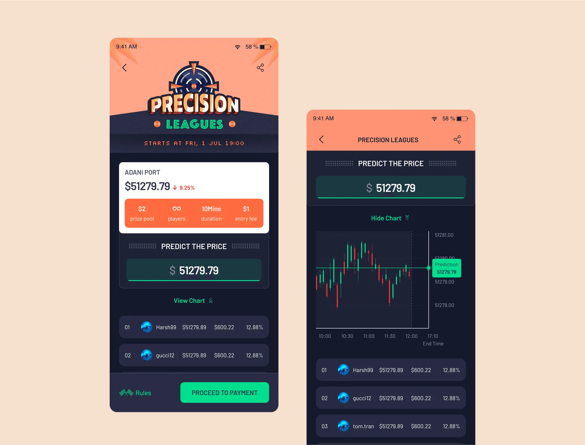
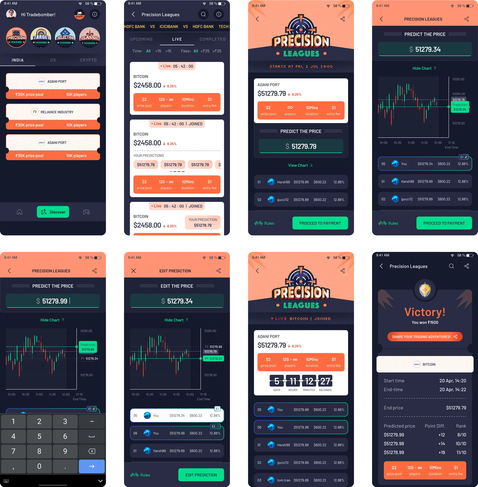
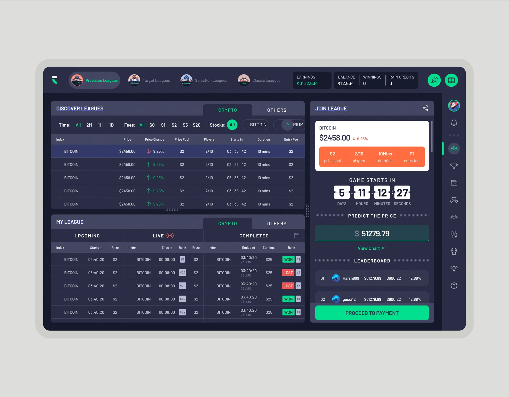
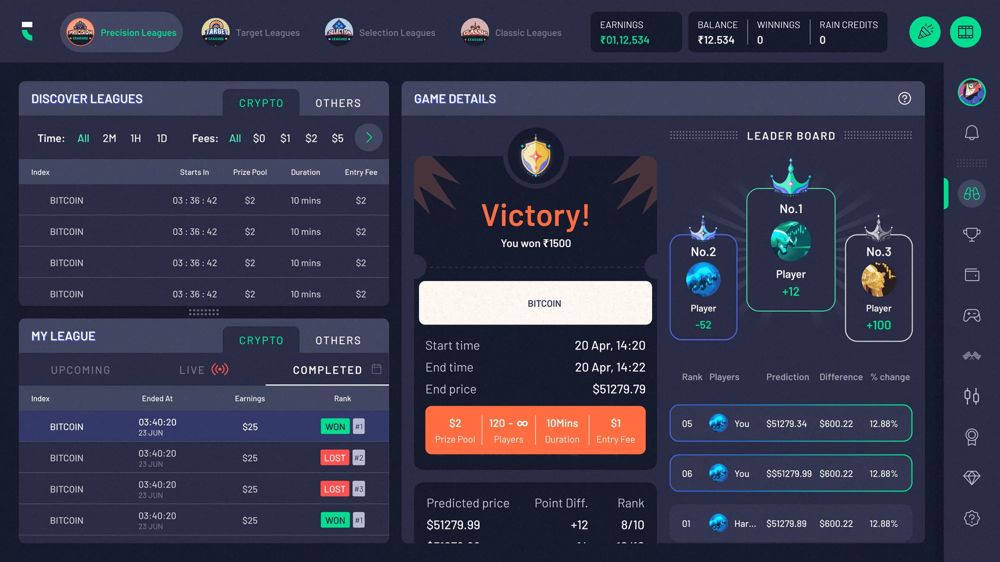
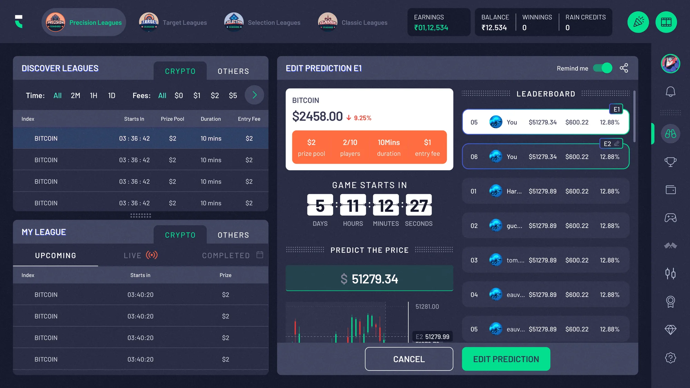
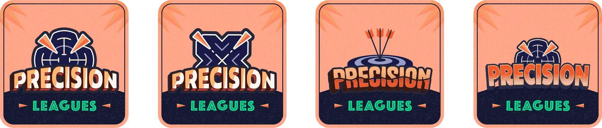

Making stock trading feel like a game.
Precision Leagues is a price prediction game inside Trading Leagues, a fantasy stocks and crypto platform where people learn the market and earn as they play. I designed its UI and logo.
Shipped and live Trading Leagues Launch post on LinkedIn
- Role
- UI design, logo
- Team
- 1 UX designer, 1 UI designer
- Tools
- Figma, Adobe Illustrator
- Platform
- Mobile and web
01The brief
A game built around one question: where will the price land?
- The goal
-
We wanted Precision Leagues to feel like a game people would keep coming back to, with simple, intuitive UI that makes it easy to jump in, make a prediction and stay involved.
- My part
-
I designed the UI and the logo, working closely with a UX designer so everything stayed in line with the visual language already set across Trading Leagues.
02UI design
Predicting with a chart, not a guess.
Next to the prediction field, players get an interactive candlestick chart, so they can look at how the price has been moving before they lock in a number.

Seeing the movement makes it easier to make an informed call, and makes the whole game feel more engaging.

Taking the game from phone to desktop.
Bringing Precision Leagues to the web meant carrying every element over from the app with care, so the game stays consistent and just as easy to use on a bigger screen.



03Logo
A logo about precision that still fits the family.
The mark had to say “precision” while sitting comfortably next to the logos of the other games on the platform.
I also explored a few variations with different graphics, to see how far the idea could stretch.
